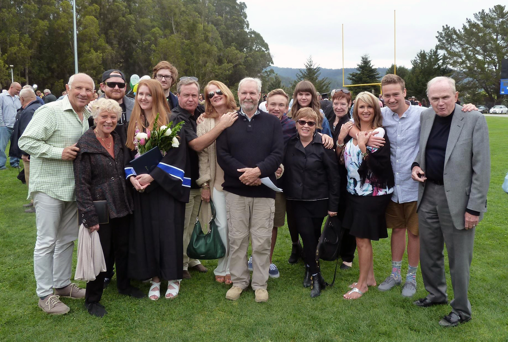

This website is a project dedicated to growing a personal archive of family recipes ranging from mid-century comforts to current favorites.
All recipes that have been documented and collected thus far are contained in a table on the home page along with relevant metadata. Available recipes can be filtered via associated family member or browsed by category via the Recipes page dropdown.
The collection is currently being maintained by Chandler Corallo. To contact, please email: ccorallo@uw.edu
